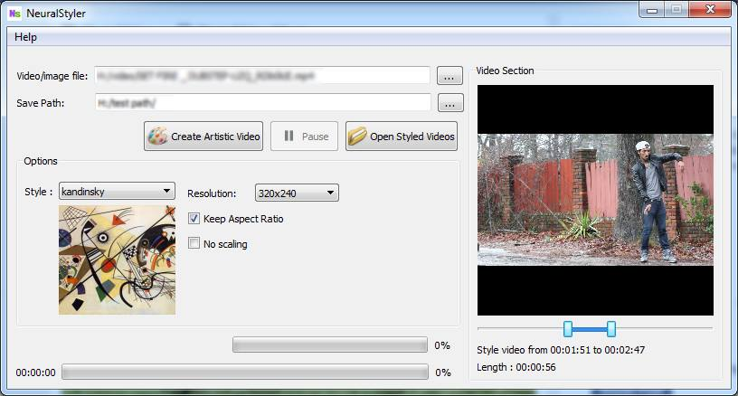
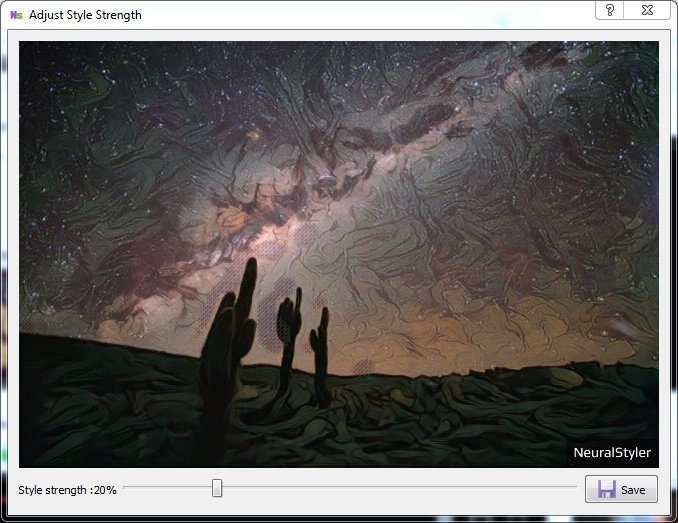

Basics
Using NeuralStyle You can style video files,photos and Gifs.
| Media | Input format | Output format |
|---|---|---|
| Video | All major video formats | MP4 |
| Photos | All major image formats | jpeg |
| Gif | -- | gif |
How to Style
Select the video you want to style,select style,resolution etc then press the "Create Artistic Style" button

Wait for some time it will style your video. Styling speed depends on
- CPU clock speed
- Resolution (lower the resolution faster will be the styling)
- Amount of RAM available(High resolution images/video needs more RAM)
For photos you can adjut style strength after styling

How to view styled videos/photos
To open output folder you can use "Open Styled Videos" button
How to download new style
New styles will be avilable here